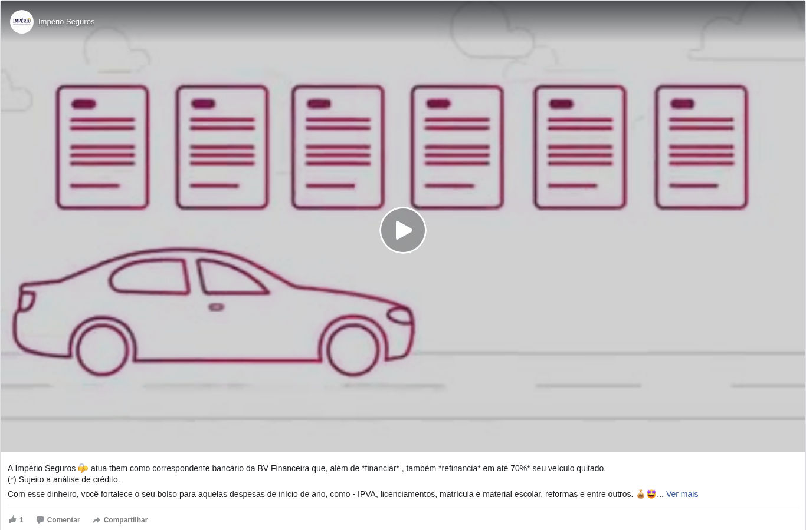
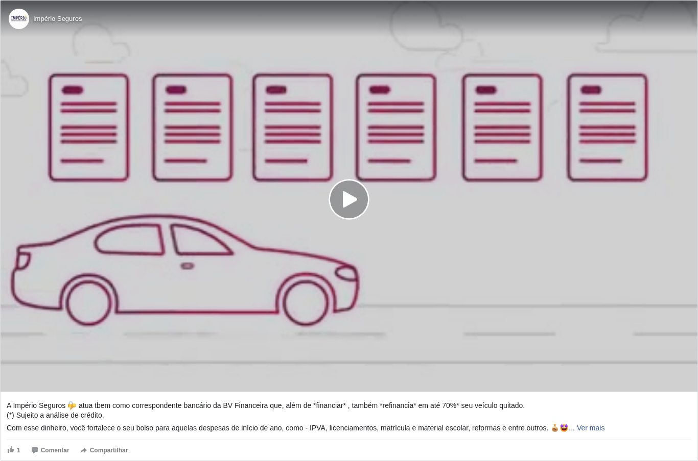

Sistema de Investigação de Marca e Identidade Online
https://www.facebook.com/ImperioCorretoraSeguros/videos/a-imp%C3%A9rio-seguros-atua-tbem-como-correspondente-banc%C3%A1rio-da-bv-financeira-que-al/1141508236292346/
Prioridade: MEDIUM · Cenário: B_AMBIGUOUS_COMMUNICATION · Revisão humana: PENDING
O anúncio no perfil 'Império Seguros' declara expressamente a atuação como correspondente bancário da BV Financeira para financiamento e refinanciamento de veículos. Não há indícios de fraude, overbranding ou personificação da marca do banco. Contudo, em virtude da ausência de CNPJ e dados de ouvidoria no material analisado (requisitos da Resolução CMN nº 4.935/2021), enquadra-se como comunicação com pendência de transparência regulatória (REVIEW_REQUIRED). [Revisor: CONFIRM] Trata-se de publicação em rede social (Facebook) de terceiro comercial (Império Seguros) promovendo serviços de financiamento e refinanciamento de veículos em nome da BV Financeira. Embora a empresa declare textualmente sua condição de correspondente bancário, omite informações cadastrais essenciais (CNPJ) e canais de ouvidoria da instituição representada, em desacordo com as exigências de transparência da Resolução CMN nº 4.935/2021. Portanto, confirma-se o enquadramento em REVIEW_REQUIRED com prioridade MEDIUM.


| Ref | Tipo | Local | Conteúdo |
|---|---|---|---|
| E-URL | domain | url | URL final: https://www.facebook.com/ImperioCorretoraSeguros/videos/a-imp%C3%A9rio-seguros-atua-tbem-como-correspondente-banc%C3%A1rio-da-bv-financeira-que-al/1141508236292346/ (domínio: www.facebook.com) |
| E-DISC-001 | text | search_index | Índice de busca (serper): A Império Seguros 🔐 atua tbem como correspondente bancário ... — A Império Seguros atua tbem como correspondente bancário da BV Financeira que, além de *financiar* , também *refinancia* em até 70%* seu veículo quitado. |
| E-SHOT-VIEWPORT | screenshot | viewport | evidence/C280250ad2e/attempt-1/viewport.png (sha256 a85413fcfaf1918f…) |
| E-SHOT-FULL | screenshot | page | evidence/C280250ad2e/attempt-1/fullpage.png (sha256 fabf3ae7b73e8454…) |
| E-TITLE | title | head | |
| E-FOLD | text | viewport (acima da dobra) | Reproduzir 0:00 Silenciar Entrar em modo de tela cheia Clique para assistir no Facebook Império Seguros A Império Seguros 🔐 atua tbem como correspondente bancário da BV Financeira que, além de *financiar* , também *refinancia* em até 70%* seu veículo quitado. (*) Sujeito a análise de crédito. Com esse dinheiro, você fortalece o seu bolso para aquelas despesas de início de ano, como - IPVA, licenciamentos, matrícula e material escolar, reformas e entre outros. 💰 🤩 ... Ver mais 1 Comentar Compartilhar |
| E-CTA-1 | cta | page | Reproduzir |
| E-CTA-2 | cta | page | Silenciar |
| E-CTA-3 | cta | page | Entrar em modo de tela cheia |
| E-CTA-4 | cta | page | Reproduzir o vídeo |
| E-CONTACT-1 | contact | page | Clique para assistir no Facebook <https://www.facebook.com/ImperioCorretoraSeguros/videos/1141508236292346/?t=0> |
| E-CONTACT-2 | contact | page | <https://www.facebook.com/watch/ImperioCorretoraSeguros/?ref=embed_video> |
| E-CONTACT-3 | contact | page | Império Seguros <https://www.facebook.com/watch/ImperioCorretoraSeguros/?ref=embed_video> |
| E-CONTACT-4 | contact | page | Saiba mais <https://www.facebook.com/help/396404120401278/list?ref=embed_video> |
| E-CONTACT-5 | contact | page | Ver mais <https://www.facebook.com/ImperioCorretoraSeguros/videos/1141508236292346/?ref=embed_video> |
| E-CONTACT-6 | contact | page | Comentar <https://www.facebook.com/ImperioCorretoraSeguros/videos/1141508236292346/?ref=embed_video> |
| E-CONTACT-7 | contact | page | Compartilhar <https://www.facebook.com/sharer/sharer.php?u=https%3A%2F%2Fwww.facebook.com%2FImperioCorretoraSeguros%2Fvideos%2F1141508236292346%2F&display=popup&ref=embed_video&src=post> |
| E-IMG-1 | image | page (acima da dobra) | imagem alt='' src=https://scontent.fcgh22-1.fna.fbcdn.net/v/t15.13418-10/133644034_936859910183619_7229796657879778493_n.jpg?stp=dst-jpg_tt6&_nc_cat=108&_nc_map=urlgen_bucketless&ccb=1-7&_nc_sid=9e0f2f&_nc_ohc=JDhWpG_e (1364x767, acima da dobra) |
| E-TXT-001 | text | page | A Império Seguros 🔐 atua tbem como correspondente bancário da BV Financeira que, além de *financiar* , também *refinancia* em até 70%* seu veículo quitado. |
| Dimensão | Sinal | Achado | Refs |
|---|---|---|---|
| VISUAL_IDENTITY | NEUTRAL | Não há apropriação visual indevida das cores ou identidade visual do Banco BV; a imagem apresenta animação genérica com ilustração de veículo. | E-SHOT-VIEWPORT E-IMG-1 |
| DECLARED_COMMERCIAL_IDENTITY | LEGITIMATE | A publicação é feita sob o perfil comercial próprio 'Império Seguros', sem tentar se passar pela instituição financeira. | E-FOLD E-SHOT-VIEWPORT |
| CORRESPONDENT_TRANSPARENCY | CONFUSION | Há declaração expressa da condição de correspondente bancário da BV Financeira, porém sem a identificação do CNPJ da corretora ou indicação da ouvidoria do banco. | E-FOLD E-TXT-001 |
| INSTITUTIONAL_LANGUAGE | LEGITIMATE | O texto refere-se ao banco em terceira pessoa ('atua tbem como correspondente bancário da BV Financeira que, além de financiar...'). | E-TXT-001 |
| LOGO_USAGE | NEUTRAL | Nenhum logotipo oficial atual ou legado (B vermelho e V azul) do Banco BV / BV Financeira foi identificado na imagem. | E-SHOT-VIEWPORT E-IMG-1 |
| SERVICE_JOURNEY | NEUTRAL | Publicação informativa de oferta de crédito em rede social direcionando para interação na própria postagem. | E-FOLD |
O anúncio no perfil 'Império Seguros' declara expressamente a atuação como correspondente bancário da BV Financeira para financiamento e refinanciamento de veículos. Não há indícios de fraude, overbranding ou personificação da marca do banco. Contudo, em virtude da ausência de CNPJ e dados de ouvidoria no material analisado (requisitos da Resolução CMN nº 4.935/2021), enquadra-se como comunicação com pendência de transparência regulatória (REVIEW_REQUIRED).
Há declaração de correspondente ou de parceria, sem identificação suficiente ou sem confirmação cadastral.
| Tipo | Valor | Ref | Contexto |
|---|---|---|---|
| domain | facebook.com | E-URL | |
| social_profile | https://www.facebook.com/ImperioCorretoraSeguros/videos/a-imp%C3%A9rio-seguros-atua-tbem-como-correspondente-banc%C3%A1rio-da-bv-financeira-que-al/1141508236292346/ | E-URL | |
| social_profile | https://www.facebook.com/ImperioCorretoraSeguros/videos/1141508236292346/?t=0 | E-CONTACT-1 | |
| social_profile | https://www.facebook.com/watch/ImperioCorretoraSeguros/?ref=embed_video | E-CONTACT-2 | |
| social_profile | https://www.facebook.com/help/396404120401278/list?ref=embed_video | E-CONTACT-4 | |
| social_profile | https://www.facebook.com/ImperioCorretoraSeguros/videos/1141508236292346/?ref=embed_video | E-CONTACT-5 | |
| social_profile | https://www.facebook.com/sharer/sharer.php?u=https%3A%2F%2Fwww.facebook.com%2FImperioCorretoraSeguros%2Fvideos%2F1141508236292346%2F&display=popup&ref=embed_video&src=post | E-CONTACT-7 | |
| correspondent_declaration | correspondente bancário | E-FOLD | Reproduzir 0:00 Silenciar Entrar em modo de tela cheia Clique para assistir no Facebook Império Seguros A Império Seguros 🔐 atua tbem como correspondente bancário da BV Financeira que, além de *financ |
Mapeamento indicativo para apoio à auditoria. Não constitui conclusão regulatória; a decisão definitiva pertence à auditoria.
Fonte: NORMATIVE
Art. 14. O contrato de correspondente deve estabelecer: [...] II - vedação à utilização, pelo contratado, de logomarca ou de outros atributos que sejam similares aos adotados pela instituição contratante em suas agências, postos de atendimento, sítio eletrônico na internet, aplicativo ou outras plataformas de comunicação em rede;
Evidência observada: —
Fonte: NORMATIVE
Art. 14. O contrato de correspondente deve estabelecer: [...] III - divulgação ao público, pelo contratado, de sua condição de prestador de serviços à instituição contratante, identificada pelo nome com que é conhecida no mercado, com descrição dos produtos e serviços oferecidos e canais de contato da instituição contratante, inclusive de sua ouvidoria, em local visível, em destaque e em formato legível, por meio de: a) sítio eletrônico do correspondente na internet, acessível na página inicial; b) aplicativo e outras plataformas de comunicação em rede do correspondente; [...]
Hipótese: Há declaração da condição de correspondente/prestador, mas outros elementos da página (apresentação da marca) podem contradizê-la ou reduzir seu efeito (destaque, legibilidade e identificação da contratante a verificar). Aplicável somente se confirmado o vínculo de correspondente.
Evidência observada: E-FOLD E-TXT-001
Informação faltante:
Fonte: NORMATIVE
Art. 3º O correspondente atua por conta e sob as diretrizes da instituição contratante, que assume inteira responsabilidade pelo atendimento prestado aos clientes e usuários por meio do contratado.
Evidência observada: —
Limitações: requisitos contratuais/internos não fornecidos: mapeamento limitado ao texto normativo
Decisão: CONFIRM → REVIEW_REQUIRED / MEDIUM
Trata-se de publicação em rede social (Facebook) de terceiro comercial (Império Seguros) promovendo serviços de financiamento e refinanciamento de veículos em nome da BV Financeira. Embora a empresa declare textualmente sua condição de correspondente bancário, omite informações cadastrais essenciais (CNPJ) e canais de ouvidoria da instituição representada, em desacordo com as exigências de transparência da Resolução CMN nº 4.935/2021. Portanto, confirma-se o enquadramento em REVIEW_REQUIRED com prioridade MEDIUM.
| Tema | Severidade | Questionamento | Refs |
|---|---|---|---|
| over_interpretation | MEDIUM | Todos os indícios de confusão têm força baixa. | E-FOLD E-TXT-001 |
| contradictory_evidence | LOW | Coexistem declaração de correspondente e indícios de confusão. | E-FOLD E-TXT-001 |
| Fonte | Consulta / hipótese | URL original | Título / trecho |
|---|---|---|---|
| serper | site:facebook.com ("BV Financeira" OR "Banco BV") (promotora OR correspondente) -site:bv.com.br -site:bancobv.com.br -site:bvfinanceira.com.br -site:bvinvestimentos.com.br -site:napista.com.br -site:bvopen.com.br -site:meufinanciamentosolar.com.br -site:votorantim.com.br -site:vam.com.br H6-platform:Facebook | https://www.facebook.com/ImperioCorretoraSeguros/videos/a-imp%C3%A9rio-seguros-atua-tbem-como-correspondente-banc%C3%A1rio-da-bv-financeira-que-al/1141508236292346/ | A Império Seguros 🔐 atua tbem como correspondente bancário ... A Império Seguros atua tbem como correspondente bancário da BV Financeira que, além de *financiar* , também *refinancia* em até 70%* seu veículo quitado. |
Original: https://www.facebook.com/ImperioCorretoraSeguros/videos/a-imp%C3%A9rio-seguros-atua-tbem-como-correspondente-banc%C3%A1rio-da-bv-financeira-que-al/1141508236292346/
Final: https://www.facebook.com/ImperioCorretoraSeguros/videos/a-imp%C3%A9rio-seguros-atua-tbem-como-correspondente-banc%C3%A1rio-da-bv-financeira-que-al/1141508236292346/
| Artefato | Caminho | SHA-256 | Bytes |
|---|---|---|---|
| screenshot_viewport | evidence/C280250ad2e/attempt-1/viewport.png | a85413fcfaf1918ffeeaa2fd593ccba2a1e5be5864ad490c1fdedc8955b84568 | 336151 |
| screenshot_full | evidence/C280250ad2e/attempt-1/fullpage.png | fabf3ae7b73e84548d8ae0118e7fb8592b7ef7b01a9be0164ca2053c843a1710 | 336247 |
| html | evidence/C280250ad2e/attempt-1/page.html.txt | 2870457b5f2576e86acfd30f4eebaafdc028821e8b4fad2a019f597446be4026 | 218369 |
| text | evidence/C280250ad2e/attempt-1/text.txt | 1dd8d39c45a52e97aea9f78d1277957ccfeb2948ecc90f51cacd2fe32c8c2b7a | 536 |
| page_data | evidence/C280250ad2e/attempt-1/page.json | 1fcf00c16c431fe317fbb33be32a4fd414d3caa2275d7e2b915c3635f1b324f6 | 5336 |
| Quando | De | Para | Nota |
|---|---|---|---|
| 2026-11-25T18:12:10+00:00 | DISCOVERED | QUEUED | prioritised (score 1.0) |
| 2026-11-25T19:24:15+00:00 | QUEUED | COLLECTING | |
| 2026-11-25T19:24:20+00:00 | COLLECTING | COLLECTED | |
| 2026-11-25T19:24:20+00:00 | COLLECTED | ANALYZING | |
| 2026-11-25T19:24:56+00:00 | ANALYZING | REVIEWING | |
| 2026-11-25T19:25:03+00:00 | REVIEWING | COMPLETED |